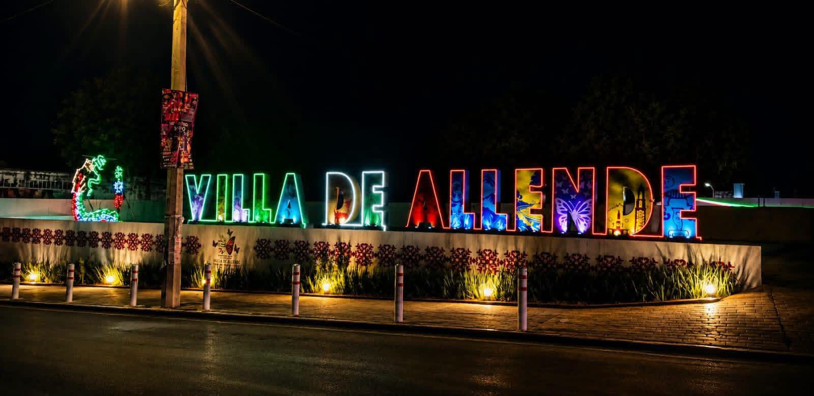
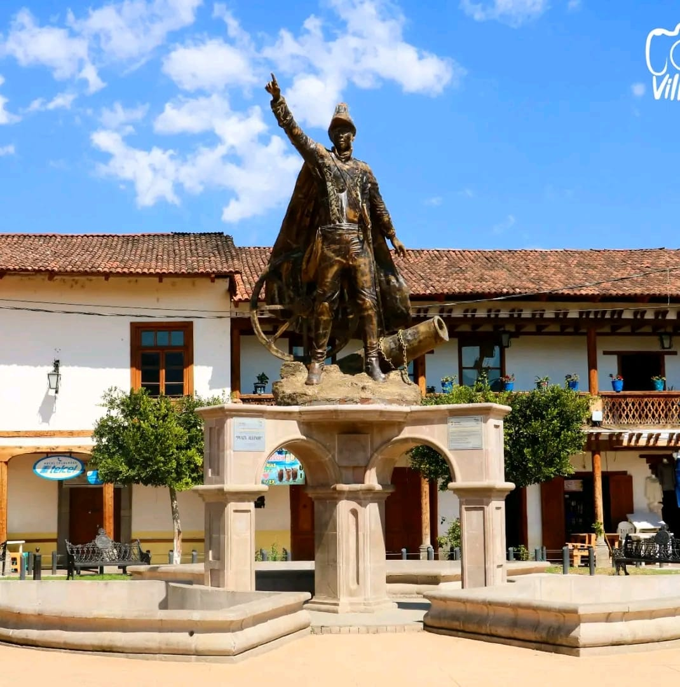

Bienvenido a Villa 360
Villa 360 es un proyecto digital que reúne, en un solo lugar, la información sobre las tradiciones, la gastronomía y los sitios turísticos de Villa de Allende, Estado de México.
Hoy en día, gran parte de este patrimonio se encuentra disperso entre testimonios orales, fotografías sueltas y publicaciones aisladas. Este sitio busca organizarlo, conservarlo y difundirlo mediante texto, imágenes y elementos multimedia.
Propósito del proyecto
Crear un sistema de información digital que sirva como vitrina para administrar y publicar contenido sobre los productos, lugares, costumbres y tradiciones culturales más representativos del municipio.
Propósito del proyecto
Crear un sistema de información digital que sirva como vitrina para administrar y publicar contenido sobre los productos, lugares, costumbres y tradiciones culturales más representativos del municipio.


¿Qué encontrarás en este sitio?
- Tradiciones y artesanía local, como el bordado mazahua.
- Platillos representativos de la gastronomía regional.
- Una tabla con los principales sitios turísticos.
- Audios y videos con testimonios de la comunidad.
- Un formulario para enviar testimonios y sugerencias.